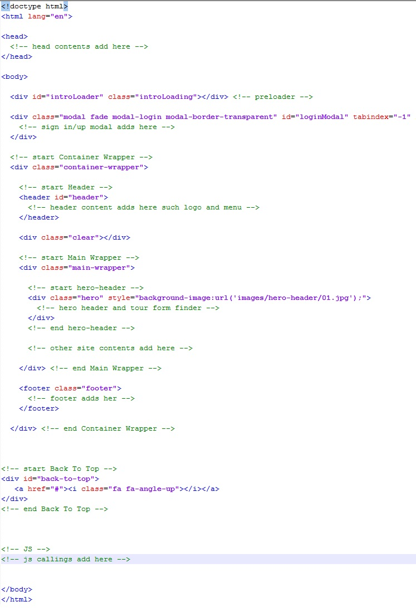
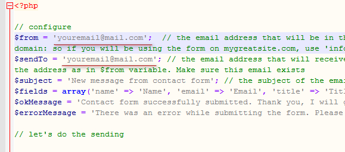

Thank You for Your Purchase
Table Finder - HTML Responsive Template for Course Management, Learning Instute, School, Online Learning, and learning related
Introduction
Thank you for purchasing Table Finder
This documentation will guide you through the customization possibilities of Table Finder - HTML Responsive Template.
If you are a HTML beginner, I recommend to install some advanced HTML editor before you dive into customizing this template. Notepad++ is great if you are Windows user and I've heard that Brackets editor is pretty good too if you are on Mac.
If you are already loving Table Finder - HTML Responsive Template, please don't forget to rate it ***** under your ThemeForest account / downloads. Thank you!
About the File
Table Finder is a HTML Responsive Template for Car Dealer, Secondhand Car Market, Car Review and Car Information
Features
- Fully Responsive
- Compatible with the most popular browsers
- Bootstrap v3.3.x
- Clean and simple design
- Sticky Header
- 1000+ font icons including font-awesome
- Ajax Login/Register Modal
- Working contact form
HTML Structure
Unzip main-files.zip files and copy all in main-files/html to your server
The main HTML structure is as the image below
In case of pages that have scrollspy which are detail and faq pages, you have to add scrollspy-container class at line main-wrapper class and scrollspy-footer class at line footer class as shown below
and

CSS Files and Structures
This template is built on Bootstrap 3.3.x framework which can be found in bootstrap/css folder
All CSS (except Bootstrap) files can be found in the template’s css folder. Here's the list of the files used within the template and a short descriptions of their function:
animate.css- animation styles. It was downloaded from Animate.cssmain.css- reset stylesplugin.css- plugins (javascript, jquery, etc.,) stylesstyle.css- template stylesyour-style.css- for your own style
Javascript and jQuery
This template imports several Javascript libraries and files, i have put a link to original authors on the file names (ended with .js) where you can find more documentation on each of them:
- Main plugins - jquery-1.11.3.min.js
- jQuery Migrate - jquery-migrate-1.2.1.min.js
- Bootstrap's JavaScript components - bootstrap.min.js
- jQuery Waypoints is the easiest way to trigger a function when you scroll to an element. - jquery.waypoints.min.js
- jQuery Easing Plugin is a jQuery plugin from GSGD to give advanced easing options. - jquery.easing.1.3.js
- jQuery SmoothScroll Plugin is experiencing for websites for mouse wheel, keyboard and touchpad scrolling- SmoothScroll.min.js
- jQuery Wow Plugin is for revealing animations when you scroll. It's shoule be used with Animate.css - wow.min.js
- jQuery SlickNav Plugin is responsive mobile menu - jquery.slicknav.min.js
- jQuery Placeholder Plugin is plugin that enables HTML5 placeholder behavior for browsers - jquery.placeholder.min.js
- Bootstrap Rating is a jQuery plugin that creates a rating control that uses Bootstrap glyphicons for rating symbols. - bootstrap-rating.js
- Creditly - Intuitive credit card form creditly.js
- jQuery Spin Plugin is a plugin that dynamically creates spinning activity indicators that can be used as resolution-independent replacement for AJAX loading GIFs. - spin.min.js
- jQuery IntroLoader Plugin is a jQuery plugin for generate animated intro loading pages - jquery.introLoader.min.js
- jQuery Readmore Plugin is a smooth, responsive jQuery plugin for collapsing and expanding long blocks of text with "Read more" and "Close" links. - readmore.min.js
- jQuery InfoBox Plugin a plugin to customize google map infowindow - infobox.js
- Select2 - The jQuery replacement for select boxes select2.full.js
- jQuery ytbgnav - jQuery plugin that lets you create background videos using youtube api and control navigation. ytbgnav.js
- jQuery Slick Plugin is fully responsive carousel - slick.min.js
- Bootstrap Modal is a user-friendly HTML5 form validation jQuery plugin for Bootstrap 3 - bootstrap-modal.js and bootstrap-modalmanager.js
- Ion.RangeSlider is a jQuery-plugin Easy, flexible and responsive range slider with skin support - ion.rangeSlider.min.js
- jQuery Validator Plugin is an extends the default Bootstrap Modal class. Responsive, stackable, ajax and more. - validator.min.js
- Bootstrap3 wysihtml5 Simple, beautiful wysiwyg editor - bootstrap3-wysihtml5.min.js
- Bootstrap Tab Collapse plugin Switches bootstrap tabs component to collapse for small screens - bootstrap-tabcollapse.js
- Bootstrap Tokenfield Advanced tagging/tokenizing plugin for jQuery and Twitter Bootstrap with a focus on keyboard and copy-paste support. - bootstrap-tokenfield.js
- DropzoneJS is an open source library that provides drag’n’drop file uploads with image previews. - dropzone.min.js
- FancySelect A better select for discerning web developers everywhere. - fancySelect.js
- Handlebars provides the power necessary to let you build semantic templates effectively with no frustration. - handlebars.min.js
- Images Grid Images grid jQuery plugin - images-grid.js
- jQuery Instagram Select and show a list of Instagram photos. - instagram.min.js
- jQuery Countimator Animated counter - jquery.countimator.js
- jQuery UI Timepicker is a jQuery UI time picker plugin built to match with other official jQuery UI widgets. Based on the existing date picker, it will blend nicely with your form and use your selected jQuery UI theme. The plugin is very easy to integrate in your form for time (hours / minutes) inputs. - jquery.ui.timepicker.js
- jQuery UI is a curated set of user interface interactions, effects, widgets, and themes built on top of the jQuery JavaScript Library. - jquery-ui.min.js
- RichMarker A Google Maps JavaScript API utility library - richmarker-compiled.js
- typeahead.js is a fast and fully-featured autocomplete library - typeahead.bundle.min.js
- Main template scripts - - custom.js you might edit in the file if you want to change to plugin options or settings
Contact Form
For the contact form to be functioning you'll need to open the file contact.php, go to line 7 and add your email address as in the picture below.
Credits and Sources
We used the following fonts, icons or other files as followings.
- Ionicons
- Font Awesome
- Pixeden Stroke 7 Icon Font Set
- Rivolicons
- OpenIconic
- Themify Icons
- Rivolicons
- Stroke Gap Icons
- Gastronomy Collection by Madebyoliver from FlatIcon
- Restaurant Elements by Freepik from FlatIcon
- Restaurant Elements 2 by Freepik from FlatIcon
- Restaurant solid by Freepik from FlatIcon
- Map Marker Icon by Eightemdi in thenounproject
- Delete Icon by Eightemdi in thenounproject
- Iconfinder
- Roboto Font
- Oswald Font
- Merriweather Font
- Several images from pixabayand pexels under Creative Commons license
(Note: All images are just for demo purpose only and NOT included in the final purchase files)
Support
Once again, thank you so much for purchasing this template! Please feel free to email at crenoveative@gmail.com us if you have any questions or just want to make some suggestions.
If you are already loving Table Finder - HTML Responsive Template, please don't forget to rate it ***** under your ThemeForest account / downloads. Thank you!
Best Regards
Crenoveative